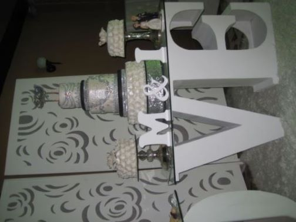

Sobre Elbia
Dedicada desde hace mas de 30 años a la elaboración y decoración de tortas, galletas, gelatinas y postres caseros, siendo una de mis pasiones, tratar de crear recuerdos inolvidables con cada bocado, que evoquen el rico sabor de lo hecho en casa.

Deseas un presupuesto?
Deseas probar nuestras deliciosas tortas? Puedes solicitar un presupuesto, llenando el formulario a continuación:
Solicita tu presupuesto aquiTe ofrecemos
Siempre pensando en brindarte un buen servicio, te ofrecemos productos elaborados con productos de calidad y con el sabor de lo hecho en casa, los productos que te ofrecemos tenemos:
- Tortas personalizadas para ocasiones especiales
- Para Matrimonios
- Quince años
- Cumpleaños
- Cupcakes
- Galletas y Galletones decorados
- Gelatinas decoradas y de colores
- Postres Caseros y tradicionales
- Tortas 3 leches
- Carrot cake
- Cheese Cake, etc